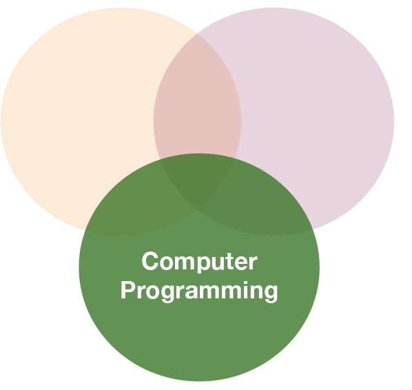
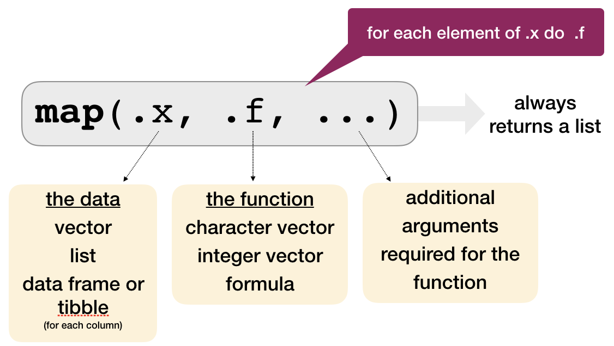
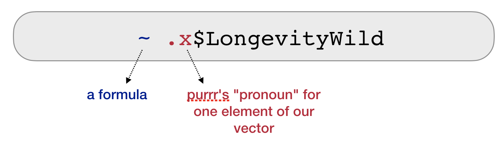
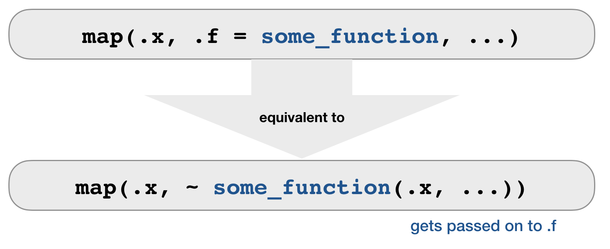
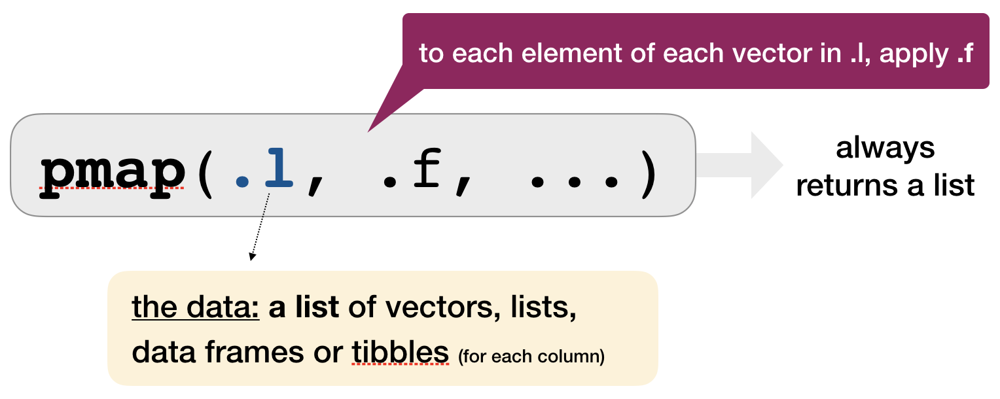
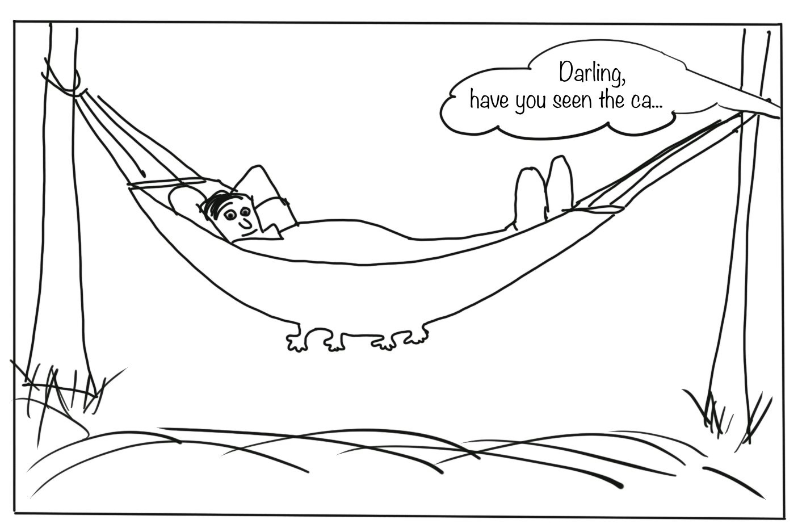

Data Analysis with R
18 - Iteration 2 (purrr and the map family)
Saskia A. Otto
Postdoctoral Researcher
Functional programming

Loops
forloops are not as important in R as they are in other languages because R is a functional programming language.- It is possible to wrap up
forloops in a function, and call that function instead of using the for loop directly.
Consider (again) this simple data frame:

Functional programming with purrr
- As you have seen, passing a function to another function is extremely handy, reduces potential bugs (much less code and copy and pasting), and makes it easy to generalise
- The apply family of functions in base R (
apply(),lapply(),sapply(),vapply(),tapply(),mapply()) does exactly that: Thes functions act on an input list, vector, dataframe, matrix or array, and apply a named function with one or several optional arguments. - The map family of functions provided by the tidyverse packages purrr operates similar but can be faster (all functions written in C++), is more consistent, well integrated in the tidyverse concept and easier to learn.
- purrr provides in addition many more useful functions for handling lists; to have an overview of available functions see the cheatsheet
The most basic function: map()

The most basic function: map()
Using our previous example:
set.seed(1)
df <- data.frame(
x = rnorm(20),
y = rnorm(20),
z = rnorm(20)
)
map() always preserves the list names.
map(df, mean)
## Error in paste("(^", regions, ")", sep = "", collapse = "|"): cannot coerce type 'closure' to vector of type 'character'
# You can also use the pipe operator
df %>% map(median)
The ... argument
Here you specify all other arguments which can be specified in the function used:
map(df, quantile, probs = c(0,0.5,1.0) )
## Error in paste("(^", regions, ")", sep = "", collapse = "|"): cannot coerce type 'closure' to vector of type 'character'
Other types of output than a list
map_lgl()→ returns a logical vectormap_int()→ returns an integer vectormap_dbl()→ returns a double vectormap_chr()→ returns a character vector
The length of the returned vector and .x are always the same!
To get the means of x, y and z as vector replace map() with the appropriate function:
map_dbl(df, mean)
## x y z
## 0.190523876 -0.006471519 0.138796773
Note: :
`map_dbl()` returns a named vector based on the original list names!Other types of output than a list
You can always generate a vector of a more general data type but not the opposite
map_int(df, mean)
## Error: Can't coerce element 1 from a double to a integer
map_chr(df, mean)
## x y z
## "0.190524" "-0.006472" "0.138797"
Your turn...
Task: Explore the data
Load the following R datafile, which contains the list groundsharks:
load("data/fishbase_sharks.R")
ls()
## [1] "groundsharks"
This list contains data for 284 groundshark species (Carcharhiniformes, the largest order of sharks) downloaded from fishbase. The list has a hierarchical structure with one list per species containing individual sublists for each information.
Task: Explore the data
Answer the following questions
- How many elements are in groundsharks?
- What is the first species listed in groundsharks? What information is given for this species?
- What is the difference between groundsharks[1] and groundsharks[[1]]?
(Answers are on the next slide)
length(groundsharks[[1]])
## [1] 99
names(groundsharks[[1]])
## [1] "sciname" "Genus" "Species"
## [4] "SpeciesRefNo" "Author" "FBname"
## [7] "PicPreferredName" "PicPreferredNameM" "PicPreferredNameF"
## [10] "PicPreferredNameJ" "FamCode" "Subfamily"
## [13] "GenCode" "SubGenCode" "BodyShapeI"
## [16] "Source" "AuthorRef" "Remark"
## [19] "TaxIssue" "Fresh" "Brack"
## [22] "Saltwater" "DemersPelag" "AnaCat"
## [25] "MigratRef" "DepthRangeShallow" "DepthRangeDeep"
## [28] "DepthRangeRef" "DepthRangeComShallow" "DepthRangeComDeep"
## [31] "DepthComRef" "LongevityWild" "LongevityWildRef"
## [34] "LongevityCaptive" "LongevityCapRef" "Vulnerability"
## [37] "Length" "LTypeMaxM" "LengthFemale"
## [40] "LTypeMaxF" "MaxLengthRef" "CommonLength"
## [43] "LTypeComM" "CommonLengthF" "LTypeComF"
## [46] "CommonLengthRef" "Weight" "WeightFemale"
## [49] "MaxWeightRef" "Pic" "PictureFemale"
## [52] "LarvaPic" "EggPic" "ImportanceRef"
## [55] "Importance" "PriceCateg" "PriceReliability"
## [58] "Remarks7" "LandingStatistics" "Landings"
## [61] "MainCatchingMethod" "II" "MSeines"
## [64] "MGillnets" "MCastnets" "MTraps"
## [67] "MSpears" "MTrawls" "MDredges"
## [70] "MLiftnets" "MHooksLines" "MOther"
## [73] "UsedforAquaculture" "LifeCycle" "AquacultureRef"
## [76] "UsedasBait" "BaitRef" "Aquarium"
## [79] "AquariumFishII" "AquariumRef" "GameFish"
## [82] "GameRef" "Dangerous" "DangerousRef"
## [85] "Electrogenic" "ElectroRef" "Complete"
## [88] "GoogleImage" "Profile" "PD50"
## [91] "Emblematic" "Entered" "DateEntered"
## [94] "Modified" "DateModified" "Expert"
## [97] "DateChecked" "TS" "SpecCode"
Quiz 1: What is the longevity of each species in the wild?
(this information is stored in LongevityWild)
STRATEGY
- Do it for one element
- Turn it into a recipe
- Use
map()to do it for all elements
1. What is the longevity for the blacknose shark (the first species in the list)?
- Solve the problem for one element

2. Turn it into a receipe
- Make it a formula
- Use .x as a pronoun

3. Do it for all elements
- Your recipe is the second argument to map

Quiz 2: What is the mean longevity in the wild across all shark and ray species?
Solution: What is the mean longevity in the wild across all shark and ray species?
Applying a mean to a list is difficult ➔ use map_dbl() to get a vector returned:
map_dbl(groundsharks, ~ .x$LongevityWild) %>% mean(na.rm = TRUE)
## [1] 20.125
Ways of specifying .f
.f can be a formula
map_int(groundsharks, ~ length(.x)) %>% head()
## [1] 99 99 99 99 99 99
map_chr(groundsharks, ~ .x[["FBname"]]) %>% head()
## [1] "Blacknose shark" "Silvertip shark" "Bignose shark"
## [4] "Graceful shark" "Blacktail reef shark" "Pigeye shark"
map_chr(groundsharks, ~ .x$FBname) %>% head()
## [1] "Blacknose shark" "Silvertip shark" "Bignose shark"
## [4] "Graceful shark" "Blacktail reef shark" "Pigeye shark"
.f can be a string or integer
- For each element, extract the named or numbered element.

map_chr(groundsharks, .f = "FBname")
# use an integer to select elements by position:
map(groundsharks, 97)
.f can be a function
- For each element, extract the named or numbered element.

map(.x = df, .f = mean, na.rm = TRUE)
map(.x = df, ~ mean(.x, na.rm = TRUE))
Combining map functions
How long is each species name?
# 1. Extract the scientific species name
char_species <- map(groundsharks, "sciname")
## Error in map.poly(database, regions, exact, xlim, ylim, boundary, interior, : no recognized region names
# 2. Get the length of the name (= number of characters)
map_int(char_species, str_length) %>% head()
## Error in map_int(char_species, str_length): object 'char_species' not found
# Piping both map functions
map(groundsharks, "sciname") %>% map_int(str_length) %>% head()
## Error in map.poly(database, regions, exact, xlim, ylim, boundary, interior, : no recognized region names
# Now in one go
map_int(groundsharks, ~ str_length(.x[["sciname"]])) %>% head()
## [1] 22 27 20 29 26 24
set_names()
is a useful function for extracting information from sublists and using this to set the names of another list.
- Example: Get the corresponding scientific name to each length value:
# First extract the length values ...
map_dbl(groundsharks, .f = "Length") %>%
# ...and give it the names from sciname
set_names(map_chr(groundsharks, .f = "sciname")) %>% head()
## Carcharhinus acronotus Carcharhinus albimarginatus
## 200 300
## Carcharhinus altimus Carcharhinus amblyrhynchoides
## 300 161
## Carcharhinus amblyrhynchos Carcharhinus amboinensis
## 255 280
Your turn...
Quiz 3: Extract more information from 'groundsharks'
- Which species has the highest weight?
- Which species has the lowest vulnerability score?
- Which species swims deepest?
- Which species do we know the least about (i.e. have the most NA entries)?
Solutions 1 + 2
# Species with the highest weight
map_dbl(groundsharks, .f = "Weight") %>%
set_names(map_chr(groundsharks, .f = "FBname")) %>%
sort() %>% tail(n = 1)
## Tiger shark
## 807400
# Species with the lowest vulnerability score
map_dbl(groundsharks, .f = "Vulnerability") %>%
set_names(map_chr(groundsharks, .f = "FBname")) %>%
sort() %>% head(n = 1)
## Pygmy ribbontail catshark
## 12.55
Solutions 3 + 4
# Species that swims deepest
map_dbl(groundsharks, .f = "DepthRangeDeep") %>%
set_names(map_chr(groundsharks, .f = "FBname")) %>%
sort() %>% tail(n = 1)
## Silky shark
## 4000
# Species we know least about
map_int(groundsharks, ~ sum(is.na(.x))) %>%
set_names(map_chr(groundsharks, .f = "sciname")) %>%
sort() %>% tail(n = 1)
## Haploblepharus kistnasamyi
## 60
Other iteration functions
Mapping over 2 arguments: map2()

map2()applies a function to PAIRS of elements from two lists, vectors, etc.- to get a vector returned:
map2_lgl(),map2_int(),map2_dbl(),map2_chr()
Mapping over 2 arguments: map2()
map2(.x = c("a","b","c"), .y = c(1,2,3), .f = rep)
## [[1]]
## [1] "a"
##
## [[2]]
## [1] "b" "b"
##
## [[3]]
## [1] "c" "c" "c"
Mapping over multiple arguments: pmap()

pmap()applies a function to GROUPS of elements FROM a LIST of lists, vectors, etc.- NO corresponding
pmap_lgl(),pmap_int(), etc.
Mapping over multiple arguments: pmap()
Example: sample from these 3 vectors 2, 10, or 5 times with or without replacement
arg_list <- list(x = list(a = 1:10, b = 1:5, c = 1:20), size = c(2, 10, 5),
repl = c(FALSE, TRUE, FALSE))
pmap(.l = arg_list, .f = sample)
## $a
## [1] 10 5
##
## $b
## [1] 3 1 4 3 3 2 2 3 3 1
##
## $c
## [1] 1 13 17 11 9
One more step in complexity:
Invoking different functions with invoke_map()
As well as varying the arguments to the function you might also vary the function itself. Example: Apply the mean, median and sd to a single vector or to a list:
# Single vector
invoke_map(.f = list(mean, median, sd),
x = 1:10)
## [[1]]
## [1] 5.5
##
## [[2]]
## [1] 5.5
##
## [[3]]
## [1] 3.02765
# List
params <- list(alist(x= 1:15),
list(x=200:400), list(x=1:4))
invoke_map_dbl(.f = list(mean, median,
sd), .x = params)
## [1] 8.000000 300.000000 1.290994
Other mapping functions
invoke(),lmap(),imap(),walk(),walk2(),pwalk()for side effects (returns input invisibly)
Your turn...
Lets go back to the exercise in the previous lecture on loops:
Write a function to fit a linear model to each data.frame (column x vs column y) and plot the slopes as histogram. You can use multiple files ("ex_final_multifile_1.csv", "ex_final_multifile_2.csv", ...) or a single file ("ex_final_one_file.csv") to solve this....
Lets tackle this task with purrr:
- import "dummyfile_1.csv" - "dummyfile_100.csv" so that you have one data list
- apply the linear model to each dataframe using one of the
mapfunctions - extract the slopes and create a histogram
Solution
# 1. Import
files <- str_c("data/functions/dummyfile_", 1:100, ".csv")
data_list <- map(files, read_csv)
## Error: 'data' is not an exported object from 'namespace:maps'
# Lets add a column with the name of the file
data_list <- map2(.x = data_list, .y = as.character(1:100), ~ mutate(.x, dataset = .y))
## Error in map2(.x = data_list, .y = as.character(1:100), ~mutate(.x, dataset = .y)): object 'data_list' not found
# 2. Apply linear models, extract slope and plot the histogram
map(data_list, ~ lm(y ~ x, data = .x)) %>%
map_dbl(~ coef(.x)[2]) %>%
hist(main = "Distributions of slopes")
## Error in maptype(database): object 'data_list' not found
purrr and list-columns
list-columns
- Data frames are a extremely handy data structure for data analysis:
- they are more clearly structured than a list (similar to a matrix)
- but they can contain different data types (which the matrix cannot)
- being a hybrid between a list and matrix allows a very flexible usage, e.g. dataframes can be indexed like a list or a matrixs
- We typically regard data frames a container for several atomic vectors of the same or different data type with a common length.
- But data frames are even more flexible! They can contain all vector types, that includes list (recall: atomic vectors and lists represent together vectors!)
- Such list in a data frame are called list-columns
- You can even store individual ggplot objects in list-columns!
list-columns
- Tibbles are particularly good in handling and visualizing list-columns:
## Error in eval(lhs, parent, parent): object 'data_list' not found
## Error in eval(lhs, parent, parent): object 'nested_df' not found
How to make a dataframe with list-columns
- Use
tidyr::nest()to create a nested dataframe in which individual tables are stored within the cells of a larger table. - Use a 2-step approach: first group the data, then create the nested data with one row per group level.
# First convert data list into a tibble
df <- data_list %>% bind_rows()
# 2-step approach
df_nested <- df %>%
group_by(dataset) %>%
nest()

## Error in eval(lhs, parent, parent): object 'data_list' not found
## Error in UseMethod("group_by_"): no applicable method for 'group_by_' applied to an object of class "function"
Map data-frames to the modeling function
- Nested data frames are useful when you want to preserve the relationships between observations and subsets of data.
- You can manipulate many sub-tables at once with the purrr mapping functions and save results as list-column in the same dataset:
model_nested <- df_nested %>%
mutate(model = map(data, ~lm(y ~ x, data = .))) %>%
print(n = 2)
## Error in eval(lhs, parent, parent): object 'df_nested' not found
Extract some summary statistics using piped operations
stats_nested <- model_nested %>%
mutate(
alpha = map(model, coef) %>% # returns list-column with intercept/slope vector
map_dbl(~ .[1]), # extract first element of each vector (same as ~ .x[1])
# alternatively, in one go:
beta = map_dbl(model, ~ coef(.x)[2]),
r_sq = map(model, summary) %>% map_dbl(~.$r.squared)
) %>%
print(n = 2)
## Error in eval(lhs, parent, parent): object 'model_nested' not found
Use map2() to make the predictions
predict_nested <- stats_nested %>%
mutate(pred = map2(.x = model, .y = data, .f = predict)) %>%
print(n = 2)
## Error in eval(lhs, parent, parent): object 'stats_nested' not found
Visualize the predictions
→ You need to get out of the nested data structure: tidyr::unnest()
unnest()makes each element of the list its own row,- but the list-columns have to be either atomic vectors or data frames!
predict_unnested <- predict_nested %>%
unnest(pred) %>%
print(n = 2)
## Error in eval(lhs, parent, parent): object 'predict_nested' not found
- Each regular column is repeated one for each row in the nested list-column.
- Using only
predinunnest()will omit thedatalist-column!
Visualize the predictions
- You can also unnest multiple columns simultaneously:
predict_unnested <- predict_nested %>%
unnest(data, pred) %>%
print(n = 2)
## Error in eval(lhs, parent, parent): object 'predict_nested' not found
Note: :
The `model` list-column cannot be unnested since all elements in the list-columns must have the same length!Visualize the predictions
- Now that we have a regular tibble, we can plot the predictions.
predict_unnested %>%
ggplot(aes(x, pred)) +
geom_line(aes(group = dataset), alpha = 0.3) +
geom_smooth(se = FALSE)
## Error in eval(lhs, parent, parent): object 'predict_unnested' not found
Your turn...
Example DATRAS data
- Restructure the dataset to create a nested data frame grouped by species.
- Apply purrr's mapping function to model the species CPUE as a function of latitude.
- Save the models and summary statistics in the same nested dataframe.
- Generate ggplots with the predicted CPUE ~ lat per species and save these in a list-column.
- Identify the species where the CPUE is best explained by latitude and look at the prediction plot.
Overview of functions you learned today
purrr functions:
map(), map_lgl(), map_int(), map_dbl(), map_chr()
set_names()
map2(), map2_lgl(), map2_int(), map2_dbl(), map2_chr()
pmap(), invoke_map(), invoke_map_dbl()
invoke(), lmap(), imap(), walk(), walk2(), pwalk()
tidyr functions:
nest(), unnest()
How do you feel now.....?
Totally confused?
purrr provides any more useful functions for handling lists; see for more information
- the cheatsheet
- chapter 21 on iterations in R for Data Science
- a good tutorial for purr is also available on this webpage: https://jennybc.github.io/purrr-tutorial/
Totally bored?

Then apply more of the map functions to your second case study!
Totally content?
Then go grab a coffee, lean back and enjoy the rest of the day...!

Thank You
For more information contact me: saskia.otto@uni-hamburg.de
http://www.researchgate.net/profile/Saskia_Otto
http://www.github.com/saskiaotto

This work is licensed under a
Creative Commons Attribution-ShareAlike 4.0 International License except for the
borrowed and mentioned with proper source: statements.
Image on title and end slide: Section of an infrared satallite image showing the Larsen C
ice shelf on the Antarctic
Peninsula - USGS/NASA Landsat:
A Crack of Light in the Polar Dark, Landsat 8 - TIRS, June 17, 2017
(under CC0 license)